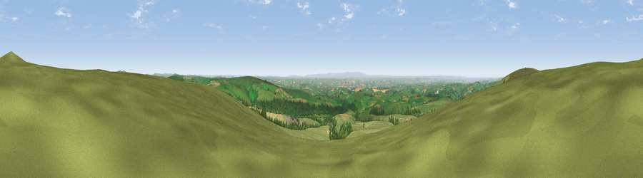

Viewpoint near Simonsbath
#3579 in England · top 11% of its area beats it · near SimonsbathThe view, rendered

A 360° render of this exact spot computed from the terrain model, tree cover and land cover — summer colours, afternoon light, calibrated against photographs of famous viewpoints. Real trees, hedges and buildings will differ in detail.
The panorama
Grey silhouette: terrain skyline in each direction (720 bearings, Earth curvature and refraction included). Dashed green: skyline with trees (+15 m) and buildings (+8 m) as obstacles. Blue strip: how far the ground is visible on each bearing.
Where the view opens
Wedge length = distance to the farthest visible ground on that bearing (vegetation-aware). Rings at 10, 25 and 50 km.
What fills the view
78% grassland · 14% woodland · 7% cropland ·
Angular shares of the visible panorama (visual magnitude), not map area. Landscape diversity 0.31 (0–1 Shannon).
Key numbers
More beautiful places nearby
The staircase of upgrades: each row has a higher view potential than everything closer. Driving times are estimates from straight-line distance, calibrated against real road routing — check an actual route before setting out.
| Place | Direction | Drive | Score |
|---|---|---|---|
| Viewpoint near Brayford | WNW · 2 km | ~5 min | 74.1 |
| Viewpoint near Challacombe | WNW · 5 km | ~11 min | 75.8 |
| Viewpoint near Challacombe | NW · 9 km | ~18 min | 77.1 |
| Viewpoint near Lynmouth | N · 12 km | ~23 min | 81.0 |
| Viewpoint near Lynmouth | N · 13 km | ~24 min | 83.2 |
| Wind Hill | N · 13 km | ~24 min | 86.5 |
| Old Tennis Court | NNW · 14 km | ~25 min | 88.3 |
| Holdstone Hill | NW · 17 km | ~30 min | 90.2 |
51.11034, -3.79149 · source: screening · position refined by local search. Computed location — check access rights before visiting.